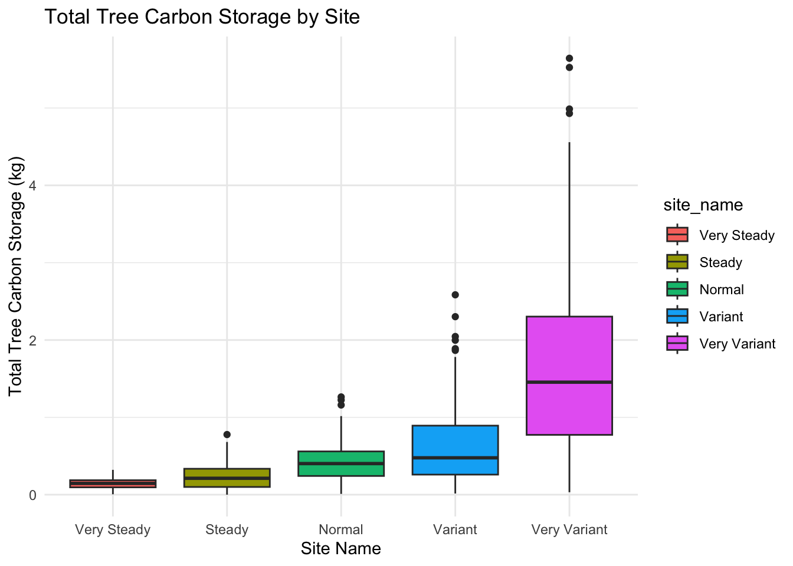
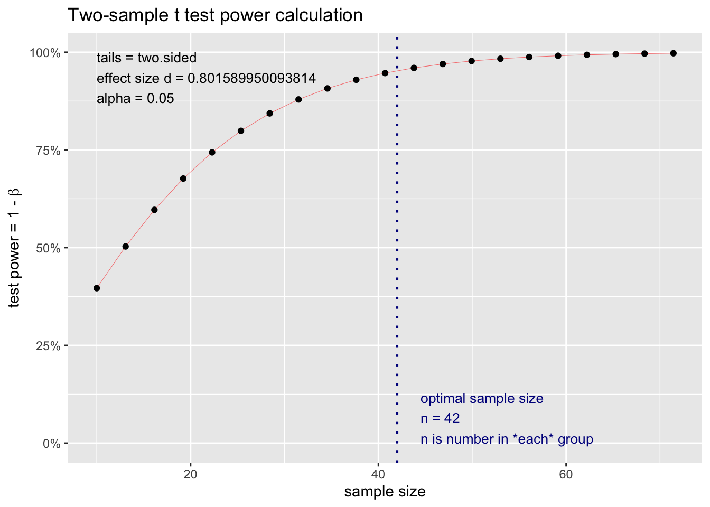
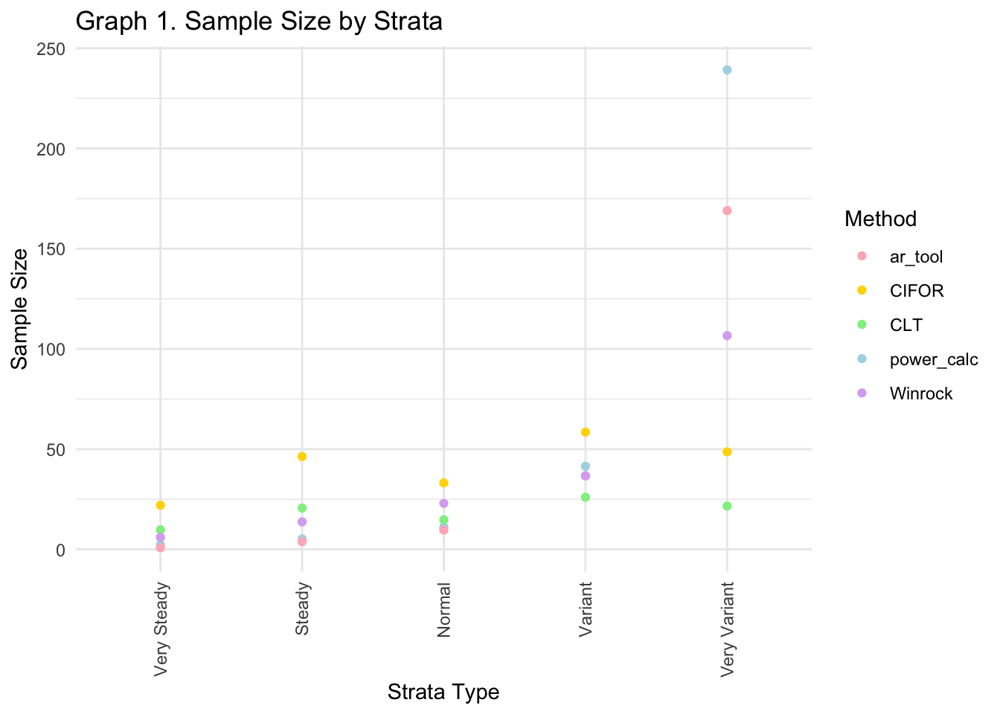
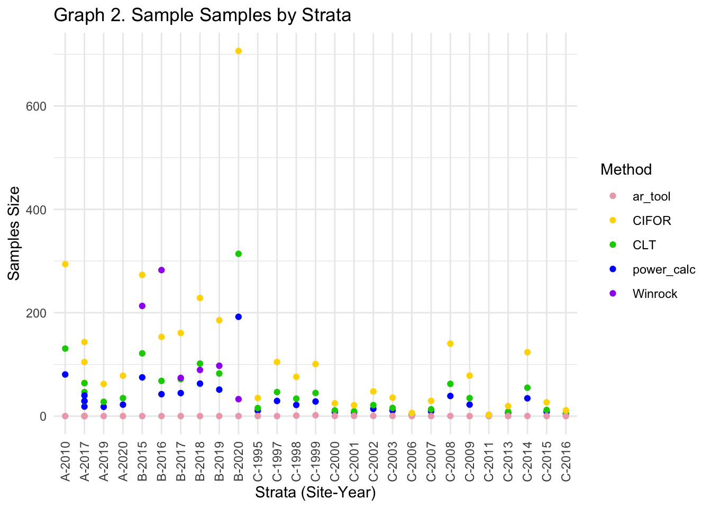
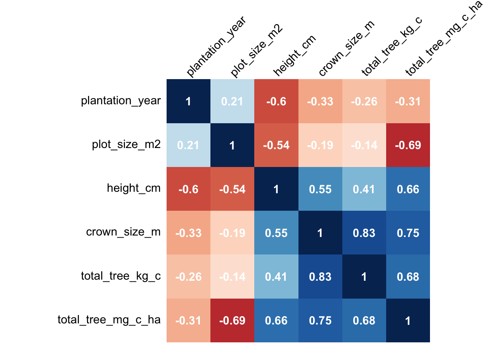
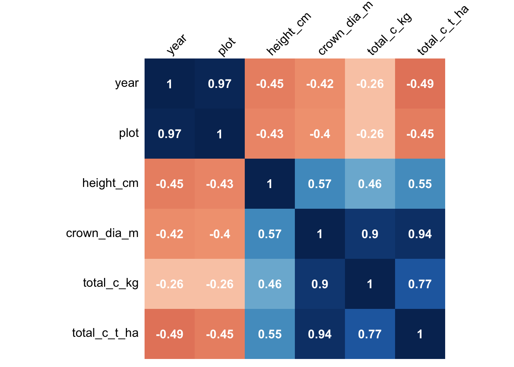
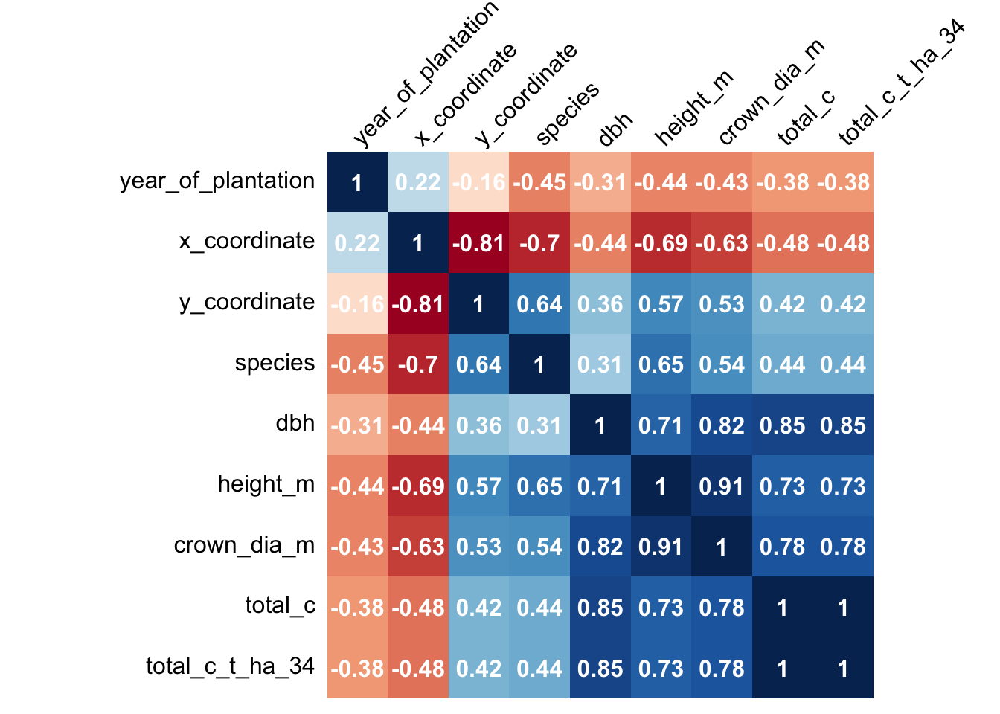

| site_name | tree_count | mean_carbon_kg | sd_carbon_kg | std_error |
|---|---|---|---|---|
| Very Steady | 151 | 0.1481133 | 0.0709162 | 0.0057711 |
| Steady | 173 | 0.2263267 | 0.1571232 | 0.0119459 |
| Normal | 178 | 0.4256436 | 0.2501144 | 0.0187469 |
| Variant | 190 | 0.6394418 | 0.4990083 | 0.0362019 |
| Very Variant | 208 | 1.7013919 | 1.2109702 | 0.0839657 |
Introduction
In this R Markdown we will calculate the sample sizes for three example data sets, and we will do an analysis with a confusion matrix to understand what are most important parameters from the field data in order to calculate the total carbon per tree per hectare. This step is important, so we can identify what are the important pieces wen we are stratifying the sample plots, and we want to homogenize the total project area as much as possible. Additionally, to understand our sample size options we we will create a demo data frame with random sample sizes and calculate the sample size needed depending in the variance.
The steps followed are.
- Download the libraries
- Read the data. Datasets:
- Site A: Abu Ali, Saudi Arabia
- Site B: Delta Blue Carbon, Sindh Pakistan
- Site C: Sidnh Pakistan, Pakistan institute
- Cleaning and tidy the data into the same format
- Bind the data sets into only one big df
- Create a demo data set for understanding how the sample size is influenced by the variation and standard deviation of the data.
- Calculate the different sample size with the proposed equations from the SOP.
- Calculate the different sample sizes with the real data sets.
- Perform the confusion matrix to understand the relationship between parameters and strengthen the SOP for calculating sample sizes
Here is our demo data set summary:

Step 6. Calculate the different sample size with the proposed equations from the SOP.
a. Power Calculation
In this case, we utilized the pwr.t.test() function from the pwr package in R. This function calculates the sample size, taking into consideration the desired power level, with certain significance level (power = 95% confidence ,margin of error = 0.05).
The effect size for each stratum was determined by dividing a desired mean (0.4 kg per sample), by the standard deviation within that stratum, meaning how much our samples deviate from the target mean.
Results: In “lightblue” results gave us 2.3 for the smallest sample size due to low variance, and 239.2 as the highest sample size due to higher variance.
| site_name | tree_count | mean_carbon_kg | sd_carbon_kg | std_error | power_calc |
|---|---|---|---|---|---|
| Very Steady | 151 | 0.1481133 | 0.0709162 | 0.0057711 | 2.3 |
| Steady | 173 | 0.2263267 | 0.1571232 | 0.0119459 | 5.2 |
| Normal | 178 | 0.4256436 | 0.2501144 | 0.0187469 | 11.2 |
| Variant | 190 | 0.6394418 | 0.4990083 | 0.0362019 | 41.4 |
| Very Variant | 208 | 1.7013919 | 1.2109702 | 0.0839657 | 239.2 |
The pwr.t.test() function is good when you have a desired mean for each stratum and will easily determine the adequate sample sizes that accounts for the variability within each stratum. To visualize the results better here is the graph for the Variant Statification.
Power Calculation Graph

b. Central Limit Theorem
Now we will calculate the sample size using the Central Limit Theorem.
\[n = \left(\frac{Z \cdot sd}{E}\right)^2\]
where:
\(n\) = sample size
\(Z\) = Z-score (e.g., 1.96 for 95% confidence)
\(sd\) = Standard Deviation of your population
\(E\) = Margin of error you are willing to accept in your estimate
Using the Central Limit Theorem, we calculate the minimum sample size to ensure our margin of error and confidence interval stay within VM0033 requirements:
For a 90% Confidence Interval: 90% confidence that our carbon stock estimate is no more than 20% off the true value.
For a 95% Confidence Interval: 95% confidence that our carbon stock estimate is no more than 30% off the true value.
Results: In “lightgreen” the CLT results gave us 9.7852599 for the smallest sample size due to low variance, and 21.62359 as the highest sample size due to higher variance.
| site_name | tree_count | mean_carbon_kg | sd_carbon_kg | std_error | power_calc | CLT |
|---|---|---|---|---|---|---|
| Very Steady | 151 | 0.1481133 | 0.0709162 | 0.0057711 | 2.3 | 9.78526 |
| Steady | 173 | 0.2263267 | 0.1571232 | 0.0119459 | 5.2 | 20.57209 |
| Normal | 178 | 0.4256436 | 0.2501144 | 0.0187469 | 11.2 | 14.73855 |
| Variant | 190 | 0.6394418 | 0.4990083 | 0.0362019 | 41.4 | 25.99459 |
| Very Variant | 208 | 1.7013919 | 1.2109702 | 0.0839657 | 239.2 | 21.62359 |
c. A/R Methodological Tool.
\[n =\frac{N \text{ }* \text{ }tvalue^2 \text{ }* \text{ }(\epsilon\ w * s)^2)}{N \text{ }*\text{ } E^2 + \text{ }tvalue^2 \text{ }* \text{ }\epsilon\ w * s^2}\]
n = Number of sample plots required for estimation of biomass stocks within the project boundary; dimensionless.
N = Total number of possible sample plots within the project boundary space or the population; dimensionless. (plot_count)
t-value = Two-sided Student´s t-value, at infinite degrees of freedom, for the required confidence level; dimensionless. (Table-\> 90% = 1.645)
w = Relative weight of the area of stratum i (i.e. the area of the stratum i divided by the project). (154/ plot_count * 154)
s = Estimated standard deviation of biomass stock in stratum (SD Carbon Biomass)
E = Acceptable margin of error (i.e. calculated by multiplying the mean biomass stock by the desired precision. i.e. mean biomass stock * 0.1 (for 10% precision) or 0.2 (for 20% precision)
Results: In the “lightpink” the A/R Methodological tool gave us 0.7823963 for the smallest sample size due to low variance, and 168.9942103 as the highest sample size due to higher variance.
INCOMPLETE: The E factor its having an effect on the final A/R Tool that needs to be reviewed.
| site_name | tree_count | stratum_size_ha | mean_carbon_kg | sd_carbon_kg | std_error | power_calc | CLT | ar_tool |
|---|---|---|---|---|---|---|---|---|
| Very Steady | 151 | 100 | 0.1481133 | 0.0709162 | 0.0057711 | 2.3 | 9.78526 | 0.7823963 |
| Steady | 173 | 100 | 0.2263267 | 0.1571232 | 0.0119459 | 5.2 | 20.57209 | 3.8227536 |
| Normal | 178 | 100 | 0.4256436 | 0.2501144 | 0.0187469 | 11.2 | 14.73855 | 9.5999852 |
| Variant | 190 | 100 | 0.6394418 | 0.4990083 | 0.0362019 | 41.4 | 25.99459 | 36.6006678 |
| Very Variant | 208 | 100 | 1.7013919 | 1.2109702 | 0.0839657 | 239.2 | 21.62359 | 168.9942103 |
CIFOR
The CIFOR document by Kauffman and Donato (2012) on mangrove forest research outlines a formula for calculating sample sizes. Published by the Center for International Forestry Research.
\[n = \left(\frac{t \cdot s}{E}\right)^2\]
Where:
n = the number of sample plots
t = the t-distribution value, usually 2 for 95% confidence
s = the expected standard deviation from prior data
E = the acceptable margin of error.
Results: In the “gold” the CIFOR tool gave us 22.0168348 for the smallest sample size due to low variance, and 48.6530775 as the highest sample size due to higher variance.
| site_name | tree_count | mean_carbon_kg | sd_carbon_kg | std_error | power_calc | CLT | ar_tool | CIFOR |
|---|---|---|---|---|---|---|---|---|
| Very Steady | 151 | 0.1481133 | 0.0709162 | 0.0057711 | 2.3 | 9.78526 | 0.7823963 | 22.01683 |
| Steady | 173 | 0.2263267 | 0.1571232 | 0.0119459 | 5.2 | 20.57209 | 3.8227536 | 46.28720 |
| Normal | 178 | 0.4256436 | 0.2501144 | 0.0187469 | 11.2 | 14.73855 | 9.5999852 | 33.16173 |
| Variant | 190 | 0.6394418 | 0.4990083 | 0.0362019 | 41.4 | 25.99459 | 36.6006678 | 58.48783 |
| Very Variant | 208 | 1.7013919 | 1.2109702 | 0.0839657 | 239.2 | 21.62359 | 168.9942103 | 48.65308 |
WINROCK
Now we wil add the results from the Winrock tool manually for a good comparison of all five methods.
Results: In the “purple” ethe Winrock tool gave us 5.99 for the smallest sample size due to low variance, and 106.6 as the highest sample size due to higher variance.
| site_name | tree_count | mean_carbon_kg | sd_carbon_kg | std_error | power_calc | CLT | ar_tool | CIFOR | Winrock |
|---|---|---|---|---|---|---|---|---|---|
| Very Steady | 151 | 0.1481133 | 0.0709162 | 0.0057711 | 2.3 | 9.78526 | 0.7823963 | 22.01683 | 5.99 |
| Steady | 173 | 0.2263267 | 0.1571232 | 0.0119459 | 5.2 | 20.57209 | 3.8227536 | 46.28720 | 13.70 |
| Normal | 178 | 0.4256436 | 0.2501144 | 0.0187469 | 11.2 | 14.73855 | 9.5999852 | 33.16173 | 22.96 |
| Variant | 190 | 0.6394418 | 0.4990083 | 0.0362019 | 41.4 | 25.99459 | 36.6006678 | 58.48783 | 36.75 |
| Very Variant | 208 | 1.7013919 | 1.2109702 | 0.0839657 | 239.2 | 21.62359 | 168.9942103 | 48.65308 | 106.60 |

Final sample size and correlations per method
The table below presents two critical metrics for evaluating our methodologies:
The total sample size.
The correlation with standard deviation (SD).
Overall, this table highlights the impact of variability on each method and shows the total sample size for each method which is good for the cost-benefit analysis. As you can see the correlation with SD shows how the project variance influences each method’s outcomes. A higher correlation suggests that changes in the SD significantly affect the method’s performance. In this case, the Winrock method show the highest correlation with SD, with the AR Tool and Power Calc following. This indicates their sensitivity to the data variance, and can be useful for stakeholder decisions.
| method | total_sample_size | Correlation_with_SD |
|---|---|---|
| CLT | 92.71408 | 0.5307088 |
| Winrock | 186.00000 | 0.9966763 |
| CIFOR | 208.60668 | 0.5307088 |
| ar_tool | 219.80001 | 0.9868234 |
| power_calc | 299.30000 | 0.9787978 |
Step 7. Calculate the different sample sizes with the real data sets.
Now, we will calculate the sample sizes again, but this time using the actual data collected from the three mangrove restoration sites.
Methodology results for site B
| site | year | plot_size_m2 | plot_count | sd_carbon_kg | power_calc | CLT | ar_tool | CIFOR | Winrock |
|---|---|---|---|---|---|---|---|---|---|
| B | 2020 | 153.938 | 5 | 0.8938315 | 192.1 | 313.98551 | 0.0001628 | 706.4674 | 32.76 |
| B | 2019 | 153.938 | 7 | 1.8395299 | 51.2 | 82.42220 | 0.0014350 | 185.4499 | 97.37 |
| B | 2017 | 153.938 | 11 | 2.1047953 | 44.5 | 71.47415 | 0.0008316 | 160.8168 | 73.94 |
| B | 2018 | 153.938 | 7 | 2.5186589 | 62.8 | 101.56436 | 0.0012075 | 228.5198 | 89.27 |
| B | 2016 | 153.938 | 13 | 4.5645982 | 42.4 | 68.08314 | 0.0124360 | 153.1871 | 282.53 |
| B | 2015 | 153.938 | 7 | 6.5105214 | 74.9 | 121.38922 | 0.0069008 | 273.1257 | 213.14 |

Step 8. Perform the confusion matrix to understand the relationship between parameters and strengthen the SOP for calculating sample sizes
Now, for this last step, we will create three confusion matrices to analyze the field sampling data from mangrove restoration projects. This analysis will help us understand and explore the relationships between the parameters involved.
For each data set, we will filter the important columns and run the analysis between each parameter. Showing the correlation values. A value close to 1 indicates a strong positive relationship, meaning that as one variable increases, the other one increases in that magnitude as well. Negative values indicate an inverse relationship, meaning as one variable increases, the other decreases.
To complement this analysis, we will run t-tests to review the statistical significance of the observed correlations. This step is essential because even a high correlation might not hold practical significance if for example, the data comes from a dispersed set of data (e.g. a cloud of points). Which can potentially mislead our interpretation of the relationships within our environmental sampling data.
This table will describe the symbol for the significant levels based in the results of the p-value
| P.Value | Symbol | Description |
|---|---|---|
| < 0.001 | *** | Highly significant |
| 0.001 - 0.01 | ** | Very significant |
| 0.01 - 0.05 | * | Significant |
| 0.05 - 0.1 | . | Marginally significant |
| > 0.1 | --- | Not significant |
Confusion Matrix - Site A
Abu Ali, Saudi Arabia

P-Value Results - Site A
Abu Ali, Saudi Arabia
| plantation_year | plot_size_m2 | height_cm | crown_size_m | total_tree_kg_c | total_tree_mg_c_ha | |
|---|---|---|---|---|---|---|
| plantation_year | NA | *** | *** | *** | *** | *** |
| plot_size_m2 | *** | NA | *** | *** | *** | *** |
| height_cm | *** | *** | NA | *** | *** | *** |
| crown_size_m | *** | *** | *** | NA | *** | *** |
| total_tree_kg_c | *** | *** | *** | *** | NA | *** |
| total_tree_mg_c_ha | *** | *** | *** | *** | *** | NA |
Confusion Matrix - Site B
Delta Blue Carbon, Sindh, Pakistan

P-Value Results. Site B
Delta Blue Carbon, Sindh, Pakistan
| year | plot | height_cm | crown_dia_m | total_c_kg | total_c_t_ha | |
|---|---|---|---|---|---|---|
| year | NA | *** | *** | *** | *** | *** |
| plot | *** | NA | *** | *** | *** | *** |
| height_cm | *** | *** | NA | *** | *** | *** |
| crown_dia_m | *** | *** | *** | NA | *** | *** |
| total_c_kg | *** | *** | *** | *** | NA | *** |
| total_c_t_ha | *** | *** | *** | *** | *** | NA |
Confusion Matrix - Site C
Pakistan Institute

P-Value Results - Site C
Pakistan Institute
| year_of_plantation | x_coordinate | y_coordinate | species | dbh | height_m | crown_dia_m | total_c | total_c_t_ha_34 | |
|---|---|---|---|---|---|---|---|---|---|
| year_of_plantation | NA | * | . | *** | *** | *** | *** | *** | *** |
| x_coordinate | * | NA | *** | *** | *** | *** | *** | *** | *** |
| y_coordinate | . | *** | NA | *** | *** | *** | *** | *** | *** |
| species | *** | *** | *** | NA | *** | *** | *** | *** | *** |
| dbh | *** | *** | *** | *** | NA | *** | *** | *** | *** |
| height_m | *** | *** | *** | *** | *** | NA | *** | *** | *** |
| crown_dia_m | *** | *** | *** | *** | *** | *** | NA | *** | *** |
| total_c | *** | *** | *** | *** | *** | *** | *** | NA | *** |
| total_c_t_ha_34 | *** | *** | *** | *** | *** | *** | *** | *** | NA |
Conclusions
The demo data frame helped me understand how the sample size varies with the type of variance in each stratum. The relationship isn’t linear, and the sample sizes are highly sensitive to the standard deviation (SD) of each stratum. This raises a follow up question: how can we create effective strata that will lead to an optimal sample size saving costs and effort?
The Power Calculation was the most respondent to variance, offering a reasonable sample sizes for achieving desired power (conservative).
The Central Limit Theorem provides a simpler, big-picture view with a trend of having smaller sample sizes compared to power calculation.
The A/R Methodological tool (VM0033) gave us good results within the expected limits for the demo sample data set, but it does require complete data for the weighting parameter (‘wi’), size per strata, total project area, and sample plot size.
CIFOR tool, is the simplest method but gave us the highest variance in sample sizing. I recommend it when data to use other methods are missing.
For the real data sets we got reasonable sample size from power calculation and CLT. The A/R tool results unfortunately did not worked as expected due to the weighting strata size.
Win Rock tool is very easy to use. It does need the data for sizes and weighting which is asked in specifically in the A/R Methodology. Is a conservative tool.
Confusion matrices are valuable for guiding field data collection, highlighting important variables.
High correlation observed between carbon stock and crown size in all three matrices.
For Site A, the plot size was inversely related to total tree carbon per ha. This may indicate bias in the carbon calculation.
The diameter at breast height (dbh) showed the highest correlation with carbon stock for the third matrix, along with an intresting X coordinate factor giving us a higher correlated relationship with carbon stock than Y coordinate.
Key Takeaways
Understanding the correlation between stratification and variance for sample size is key. Larger areas with greater variance will need more samples, highlighting the importance of having the correct stratification to create relatively homogeneous areas, minimizing the variance from the beginning of the project.
Running correlation matrices and t-tests, we can help you oversee what are the key parameters to consider in the stratification. In this case, we saw that it is essential to consider clusters based on crown size, plot size, height, and diameter at breast height (DBH).
For Site A, there was an inverse relationship between plot size and total tree carbon per hectare, indicating that plot size does influence the calculations. The key takeaway here that plot sizes do influence in the calculation, and its useful to have different plot sizes measurements to run analysis and feed the continuous improvement plan for the project.
An interesting point from the A/R Tool shows that in large strata, once you approach the sample size cap, expanding the area further slightly increases the sample size. For example, expanding from 1,000 ha to 100,000 ha has a smaller % effect on sample size than increasing from 100 ha to 500 ha. This needs to be considered in the stratification process.
The use of other methods is useful when:
If you are going to a new site and have a small data sets, you can calculate the sample size with CIFOR or CLT and kick off the initial analysis for a monitoring campaign.
Comparing the sample sizes between methods vs. theoretical analysis can help make decisions to stakeholders more easy or safe.
Developing a more detailed monitoring campaign plan based on the initial data available. For carbon projects is common to not have all data fields available, which this methods can be beneficial to have different options.
Citation
BibTeX citation:
@online{patrón2024,
author = {Patrón, Javier},
title = {Blue {Carbon} {Sample} {Size} {Analysis}},
date = {2024-06-28},
url = {https://github.com/javipatron},
langid = {en}
}
For attribution, please cite this work as:
Patrón, Javier. 2024. “Blue Carbon Sample Size Analysis.”
June 28, 2024. https://github.com/javipatron.